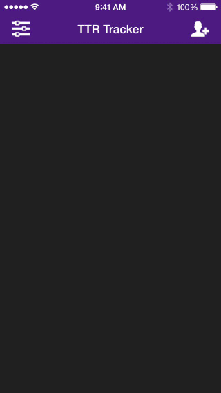
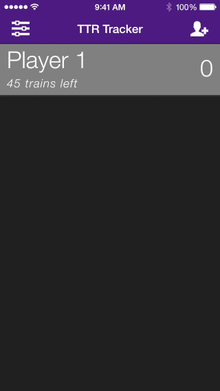
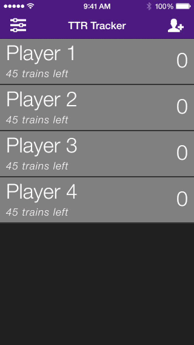
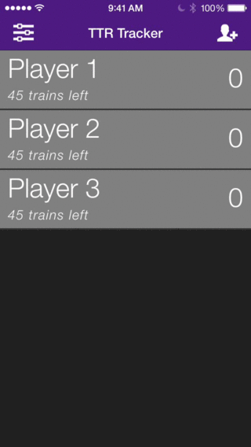
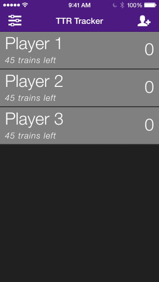
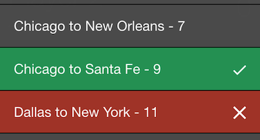

Welcome! Thank you for checking out my app. Obviously you are here because you have questions about the functionality and I'm hear to provide answers. If there is anything else you need, feel free to contact me.
To add a player, click the 'Add Player' icon in the top right of the screen. From here, you can choose to enter the name of the player or just touch 'OK' to use a generic 'Player #' name. 
To remove a single player from the app, touch the player to trigger the player actions menu. Next, touch 'More Options' followed by 'Remove Player.' 
To remove all players, touch the 'Settings' icon in the top left corner of the screen. This will open the application management menu. From here touch the 'Clear Players' button. 
To change a player's name, touch the player and then select 'More Options...' followed by 'Edit Name'. You will be presented with a popup box allowing you to type in a new name for your player. If you do not type a name into the box, a placeholder name will be selected for you. 
To change a player's color, touch the player and then select 'More Options...' followed by 'Change Color'. You will be presented with a popup box allowing you to select a new color for your player. 
Game settings allow for you to specify which version of Ticket to Ride you want to play. This selection drives many different features of TTR Train Tracker including:
To change your current game settings, click the 'Settings' icon in the top left of the screen. This will open the settings panel allowing you to next click the 'Game Settings' option. From here, you can scroll to find the version of Ticket to Ride that you want to play. Simply tap the game version to select it and click 'Done' when you are finished. Keep in mind, selecting a different version will reset all current scores.
Now that you have selected a new version to play with, the associated changes are now effective in the available route lengths as well as the destination tickets & bonuses.
This option displays a popup message reviewing all of the current recorded points and the players associated.
This will clear all scores for all players in the game.
This will clear all players from the application.
When you select a user, you will be presented with a list of available routes. These routes are specific to the version of Ticket to Ride you have selected in the Game Settings menu. If you would like to use a generic list of routes, select the Custom version in Game Settings.
When someone plays a route of trains in the game, simply tap their name and select the appropriate route length to apply it to their score. Route lengths & associated points awarded have been documented for all versions of TTR. If you find a discrepancy please reach out and let us know.
Fast Scoring is a feature unique to TTR Train Tracker. This feature allows you to quickly add up a player's routes without having to continuously reopen the available routes action. This is especially usefull for players who like to add up their routes at the end of the game instead of trying to keep track of them throughout the game.
If you want to take advantage of Fast Scoring, simply select the user you want to calculate and select 'More Options'. From this action list click the 'Fast Scoring' link and you will be presented with a popup message allowing you to click the various route lengths. Keep in mind that Fast Scoring never utilizes routes specific to the current TTR version. It will always display route lengths from 1-9.
Tickets & bonuses allow you to calculate all of the player's destination tickets at the end of the game. The tickets and bonuses available are dependent on the current TTR version selected in the Game Settings menu. The list of destination tickets and bonuses has been painstakingly compiled but if you notice any errors, PLEASE contact us and let us know.
To calculate a user's completed tickets, simply click the appropriate user then select the 'More Options' link. From here, select 'Score Routes & Bonuses' to be presented a length list of available routes and bonuses. The items in this list act as a 3-way switch, allowing you to specify the following states of completion: 
Cheat sheets provide the user with all the information relevant to the different versions of Ticket to Ride. Now you no longer need to dig up rulebooks to look up how many trains you're supposed to start with. All of that information is available at your fingertips.